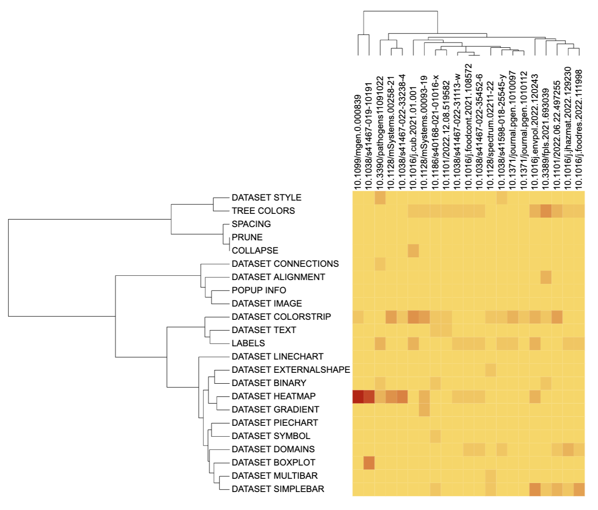
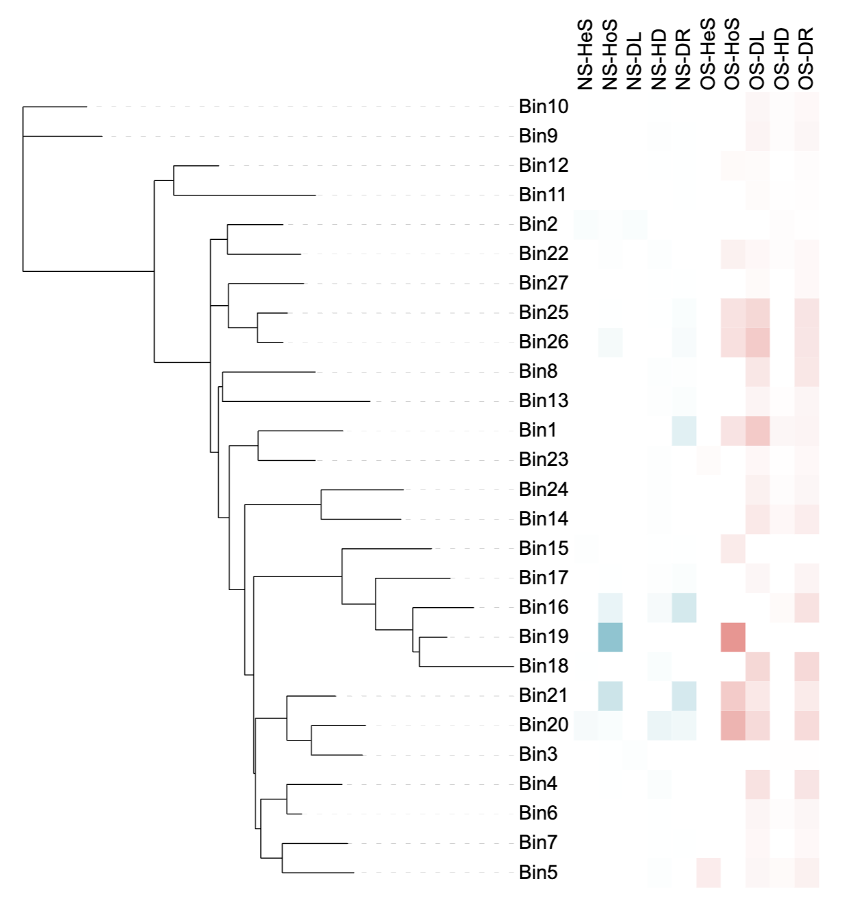

DATASET_HEATMAP.RmdThrough the DATASET_HEATMAP template, each tree tip is
associated to multiple numeric values, which are displayed as a set of
colored boxes (a heatmap). The DATASET_HEATMAP template
belongs to the “Basic plot” class (refer to the Class for
detail information).
This section shows how to use the DATASET_HEATMAP
template to draw a heatmap from multi-column wide data. Without
itol.toolkit, users would have to perform data analysis and
visualization preparation in different environments. The itol.toolkit
provides consistency to the workflow, enabling the user to perform data
processing and visualization preparation seamlessly.
This section uses dataset 1 and dataset 3 as examples to show the drawing of heatmap. (refer to the Dataset for detail information). Users can download the data locally from the provided link above. The files are read using a relative path in this document, so please adjust the path based on actual situation.
The first step is to load the newick format tree file
tree_of_itol_templates.tree and its corresponding metadata
templates_frequence.txt. The following example data
templates_frequence.txt contains the usage of each template
type in 21 published studies.
library(itol.toolkit)
library(data.table)
library(ape)
tree <- system.file("extdata",
"tree_of_itol_templates.tree",
package = "itol.toolkit")
df_frequence <- system.file("extdata",
"templates_frequence.txt",
package = "itol.toolkit")
df_frequence <- fread(df_frequence)By setting the unit@specific_themes$heatmap$color$max
and unit@specific_themes$heatmap$color$min, we can manually
control the colors corresponding to the maximum and minimum values. In
addition, there is a mid value for the default color setting, and we can
manually cancel setting the mid value:
unit@specific_themes$heatmap$use_mid <- 0
unit_25 <- create_unit(data = df_frequence,
key = "E025_heatmap_1",
type = "DATASET_HEATMAP",
tree = tree)
unit_25@specific_themes$heatmap$color$min <- "#ffd966"
unit_25@specific_themes$heatmap$color$max <- "#cc0000"
unit_25@specific_themes$heatmap$use_mid <- 0
write_unit(unit_25)
The data in dataset3 comes from Lei Zheng et al. Comparing with oxygen, trate simplifies microbial community assembly and improve functions as an electric acceptor in waste water treatment, published in 2022 in Environmental Pollution. This part will use a heatmap to show the proportion of each community assembly process in each bin. In the original text, the data is divided into two groups (NS and OS). Here, we visualize the two groups of data respectively. The files used below are read using a relative path in this document, so please adjust the path based on actual situation.
library(itol.toolkit)
library(data.table)
library(ape)
library(dplyr)
tree_2_path <- system.file("extdata",
"dataset3/assembly-tree.nwk",
package = "itol.toolkit")
tree_2 <- read.tree(tree_2_path)
metadata_path <- system.file("extdata",
"dataset3/assembly-metadata.txt",
package = "itol.toolkit")
df_metadata <- data.table::fread(metadata_path)First, we prepare a heatmap drawing template using NS group data.
df_cap_NS <- df_metadata %>%
select(ID, starts_with("NS")) %>%
select(-ends_with("bar"))
unit_26 <- create_unit(data = df_cap_NS,
key = "Zheng2022ep_4a_heatmap_NS",
type = "DATASET_HEATMAP",
tree = tree_2)
unit_26@specific_themes$heatmap$color$min <- "#ffffff"
unit_26@specific_themes$heatmap$color$max <- "#8ccdd7"
unit_26@specific_themes$heatmap$use_mid <- 0
write_unit(unit_26)Next, use the same method to visualize OS group data.
df_cap_OS <- df_metadata %>% select(ID, starts_with("OS")) %>% select(-ends_with("bar"))
unit_27 <- create_unit(data = df_cap_OS,
key = "Zheng2022ep_4a_heatmap_OS",
type = "DATASET_HEATMAP",
tree = tree_2)
unit_27@specific_themes$heatmap$color$min <- "#ffffff"
unit_27@specific_themes$heatmap$color$max <- "#f89b9b"
unit_27@specific_themes$heatmap$use_mid <- 0
write_unit(unit_27)
It is worth noting that the column names of the data used to draw the heatmap will be displayed on the side of the heatmap. Users should try to avoid using special symbols in the column names, otherwise errors may occur when applying the template to the iTOL: Failed to decode the file. Make sure it is in ASCII or UTF8 plain text format. Try using the dataset templates available on iTOL’s help pages.
The program will generate a cluster tree based on heatmap data on the
side of the heat map by default. If you do not want to display the
cluster tree, you can modify it through
unit@specific_themes$heatmap$tree$tree_display <- 0:
unit_26@specific_themes$heatmap$tree$tree_display <- 0
unit_27@specific_themes$heatmap$tree$tree_display <- 0The maximum and minimum values of the heatmap can be set through
unit_26@specific_themes$heatmap$value$max and
unit_26@specific_themes$heatmap$value$min:
unit_26@specific_themes$heatmap$value$max <- 8
unit_26@specific_themes$heatmap$value$min <- 0IOCAS, weiyLiu@outlook.com↩︎
CACMS, njbxhzy@hotmail.com↩︎
IOCAS, tongzhou2017@gmail.com↩︎